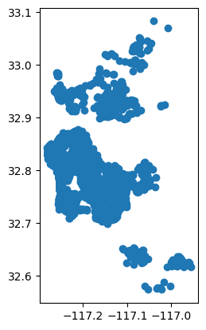
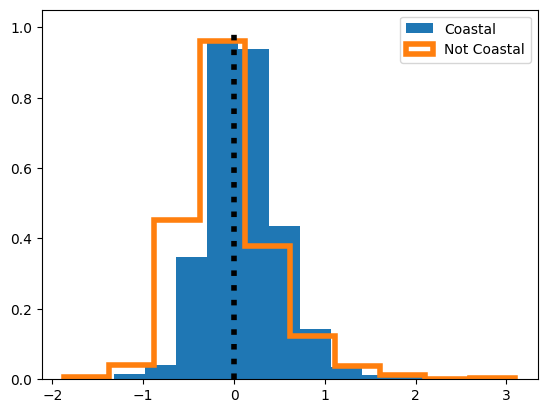
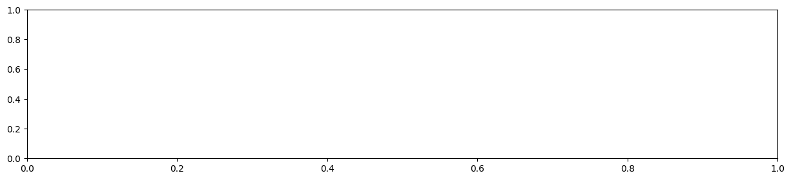
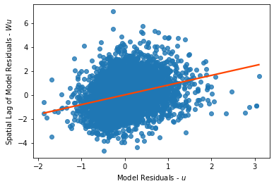
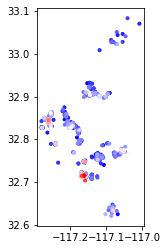
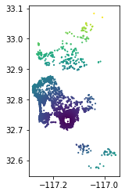
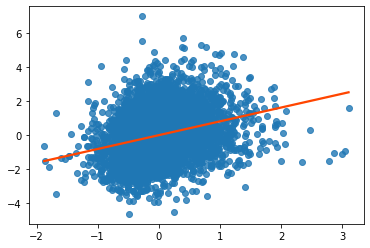
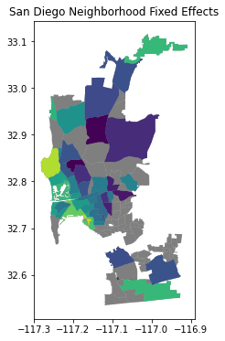

Créditos: El contenido de este cuaderno ha sido tomado de varias fuentes, pero especialmente de Dani Arribas-Bel - University of Liverpool & Sergio Rey - Center for Geospatial Sciences, University of California, Riverside. El compilador se disculpa por cualquier omisión involuntaria y estaría encantado de agregar un reconocimiento.
Regresión Espacial#
La regresión (y la predicción en general) nos proporciona un caso perfecto para examinar cómo la estructura espacial puede ayudarnos a comprender y analizar nuestros datos. Por lo general, la estructura espacial ayuda a los modelos de dos maneras. La primera (y más clara) manera en que el espacio puede tener un impacto en nuestros datos es cuando el proceso que genera los datos es explícitamente espacial. Aquí, piensa en algo como los precios de las casas unifamiliares. A menudo sucede que las personas pagan un precio premium por su casa para vivir en un mejor distrito escolar para la misma calidad de casa. Alternativamente, las casas más cercanas a contaminantes acústicos o químicos como plantas de tratamiento de aguas residuales, instalaciones de reciclaje o carreteras anchas, pueden ser más baratas de lo que anticiparíamos. Finalmente, en casos como la incidencia de asma, los lugares a los que las personas tienden a viajar a lo largo del día, como sus lugares de trabajo o recreación, pueden tener más impacto en su salud que sus direcciones residenciales. En este caso, puede ser necesario utilizar datos de otros sitios para predecir la incidencia de asma en un sitio dado. Independientemente del caso específico en juego, aquí, la geografía es una característica: nos ayuda directamente a hacer predicciones sobre resultados porque esos resultados provienen de procesos geográficos.
Una comprensión alternativa (y más escéptica) reconoce a regañadientes el valor instrumental de la geografía. A menudo, en el análisis de métodos predictivos y clasificadores, estamos interesados en analizar lo que fallamos. Esto es común en econometría; un analista puede estar preocupado de que el modelo sistemáticamente prediga mal algunos tipos de observaciones. Si sabemos que nuestro modelo rutinariamente se desempeña mal en un conjunto conocido de observaciones o tipo de entrada, podríamos hacer un mejor modelo si podemos tener en cuenta esto. Entre otros tipos de diagnósticos de errores, la geografía nos proporciona un incrustación excepcionalmente útil para evaluar la estructura en nuestros errores. Mapear el error de clasificación/predicción puede ayudar a mostrar si hay grupos de errores en nuestros datos. Si sabemos que los errores tienden a ser mayores en algunas áreas que en otras áreas (o si el error es “contagioso” entre observaciones), entonces podríamos aprovechar esta estructura para hacer mejores predicciones.
La estructura espacial en nuestros errores puede surgir de cuando la geografía debería ser de alguna manera un atributo, pero no estamos seguros exactamente de cómo incluirla en nuestro modelo. También pueden surgir porque hay alguna otra característica cuya omisión causa los patrones espaciales en el error que vemos; si esta característica adicional se incluyera, la estructura desaparecería. O podría surgir de las complejas interacciones e interdependencias entre las características que hemos elegido usar como predictores, lo que resulta en una estructura intrínseca en la mala predicción. La mayoría de los predictores que usamos en modelos de procesos sociales contienen información espacial incorporada: patrones intrínsecos a la característica que obtenemos de forma gratuita en el modelo. Si lo pretendemos o no, usar un predictor con patrón espacial en un modelo puede resultar en errores con patrón espacial; usar más de uno puede amplificar este efecto. Por lo tanto, independientemente de si el verdadero proceso es explícitamente geográfico, información adicional sobre las relaciones espaciales entre nuestras observaciones o más información sobre sitios cercanos puede hacer que nuestras predicciones sean mejores.
Existen dos maneras fundamentalmente diferentes de modelar la estructura espacial en datos discretos: los modelos Autorregresivos Condicionales (CAR) con Campos Aleatorios de Markov o los modelos Autorregresivos Simultáneos (SAR) con matrices de conectividad de vecindad (\textbf{W}). Estos modelos introducen dependencia espacial en su estructura de covarianza como función de una \textbf{W}. Por lo tanto, estos modelos dependen de la definición de vecinos y los pesos de vecindad (\cite{anselin1996simple}). Las matrices de pesos se pueden obtener mediante varios procedimientos, tales como: (i) matrices de contigüidad binaria de orden-\textit{p} que pueden considerar vecinos de orden-\textit{p}, donde \textit{p} es un número entero positivo que representa los primeros vecinos (n=1), segundos (n=2) vecinos de vecinos, hasta \textit{p=n} niveles, (ii) matrices de distancia inversa o matrices de decaimiento exponencial de la distancia, y (iii) matrices de vecinos-\textit{q} más cercanos, donde \textit{q} es un número entero positivo que representa el número de vecinos considerados (\cite{getis2009spatial, stakhovych2009specification}).
Los modelos SAR y CAR incorporan información discreta sobre los vecinos (\cite{wall2004close, jaya2021spatial}). La principal diferencia entre los modelos SAR y CAR es su especificación (\cite{cressie2015statistics}). Los modelos SAR explican las relaciones entre las variables de respuesta en todas las ubicaciones de los datos areales de forma simultánea (\cite{ver2018spatial,jaya2021spatial}). En cambio, los modelos CAR especifican la distribución de una variable de respuesta en una ubicación dada condicionada a los valores de sus vecinos (\cite{anselin1988spatial}). El modelo CAR es adecuado para situaciones con dependencia de primer orden o autocorrelación espacial relativamente local, mientras que el SAR es más adecuado cuando hay dependencia de segundo orden o una autocorrelación espacial más global.
Para aprender un poco más sobre cómo funciona la regresión, examinaremos información sobre AirBnB en San Diego, CA. Este conjunto de datos contiene características intrínsecas de la casa, tanto continuas (número de camas como en beds) como categóricas (tipo de alquiler o, en el argot de AirBnb, grupo de propiedades como en las series de variables binarias de pg_X), pero también variables que se refieren explícitamente a la ubicación y configuración espacial del conjunto de datos (por ejemplo, distancia al Parque Balboa, d2balboa o identificación de vecindario, neighbourhood_cleansed).
%matplotlib inline
from pysal.model import spreg
from pysal.lib import weights
from pysal.explore import esda
from scipy import stats
import statsmodels.formula.api as sm
import numpy
import pandas as pd
import geopandas as gpd
import matplotlib.pyplot as plt
import seaborn
C:\Users\edier\miniconda3\Lib\site-packages\spaghetti\network.py:40: FutureWarning: The next major release of pysal/spaghetti (2.0.0) will drop support for all ``libpysal.cg`` geometries. This change is a first step in refactoring ``spaghetti`` that is expected to result in dramatically reduced runtimes for network instantiation and operations. Users currently requiring network and point pattern input as ``libpysal.cg`` geometries should prepare for this simply by converting to ``shapely`` geometries.
warnings.warn(dep_msg, FutureWarning, stacklevel=1)
db = gpd.read_file('https://geographicdata.science/book/_downloads/dcd429d1761a2d0efdbc4532e141ba14/regression_db.geojson')
db.info()
<class 'geopandas.geodataframe.GeoDataFrame'>
RangeIndex: 6110 entries, 0 to 6109
Data columns (total 20 columns):
# Column Non-Null Count Dtype
--- ------ -------------- -----
0 accommodates 6110 non-null int64
1 bathrooms 6110 non-null float64
2 bedrooms 6110 non-null float64
3 beds 6110 non-null float64
4 neighborhood 6110 non-null object
5 pool 6110 non-null int64
6 d2balboa 6110 non-null float64
7 coastal 6110 non-null int64
8 price 6110 non-null float64
9 log_price 6110 non-null float64
10 id 6110 non-null int64
11 pg_Apartment 6110 non-null int64
12 pg_Condominium 6110 non-null int64
13 pg_House 6110 non-null int64
14 pg_Other 6110 non-null int64
15 pg_Townhouse 6110 non-null int64
16 rt_Entire_home/apt 6110 non-null int64
17 rt_Private_room 6110 non-null int64
18 rt_Shared_room 6110 non-null int64
19 geometry 6110 non-null geometry
dtypes: float64(6), geometry(1), int64(12), object(1)
memory usage: 954.8+ KB
db.plot()
<Axes: >

db.head(2)
| accommodates | bathrooms | bedrooms | beds | neighborhood | pool | d2balboa | coastal | price | log_price | id | pg_Apartment | pg_Condominium | pg_House | pg_Other | pg_Townhouse | rt_Entire_home/apt | rt_Private_room | rt_Shared_room | geometry | |
|---|---|---|---|---|---|---|---|---|---|---|---|---|---|---|---|---|---|---|---|---|
| 0 | 5 | 2.0 | 2.0 | 2.0 | North Hills | 0 | 2.972077 | 0 | 425.0 | 6.052089 | 6 | 0 | 0 | 1 | 0 | 0 | 1 | 0 | 0 | POINT (-117.12971 32.75399) |
| 1 | 6 | 1.0 | 2.0 | 4.0 | Mission Bay | 0 | 11.501385 | 1 | 205.0 | 5.323010 | 5570 | 0 | 1 | 0 | 0 | 0 | 1 | 0 | 0 | POINT (-117.25253 32.78421) |
Estas son las variables explicativas que utilizaremos a lo largo de este ejemplo.
variable_names = ['accommodates', 'bathrooms', 'bedrooms', 'beds', 'rt_Private_room', 'rt_Shared_room', 'pg_Condominium', 'pg_House', 'pg_Other', 'pg_Townhouse']
Regresión no espacial#
Antes de discutir cómo incluir explícitamente el espacio en el marco de regresión lineal, vamos a mostrar cómo se puede llevar a cabo la regresión básica en Python y cómo se pueden comenzar a interpretar los resultados. La idea principal de la regresión lineal es explicar la variación en una variable (dependiente) dada como una función lineal de una colección de otras variables (explicativas). Por ejemplo, en nuestro caso, podemos querer expresar/explicar el precio de una casa como una función de si es nueva y el grado de privación del área donde se encuentra. A nivel individual, podemos expresar esto como:
donde \(P_i\) es el precio de AirBnb de la casa \(i\), y \(X\) es un conjunto de covariables que usamos para explicar tal precio. \(\beta\) es un vector de parámetros que nos dan información sobre de qué manera y en qué medida cada variable está relacionada con el precio, y \(\alpha\), el término constante, es el precio promedio de la casa cuando todas las otras variables son cero. El término \(\epsilon_i\) se refiere comúnmente como “error” y captura elementos que influyen en el precio de una casa pero que no están incluidos en \(X\). También podemos expresar esta relación en forma de matriz, excluyendo subíndices para \(i\), lo que produce:
Una regresión se puede ver como una extensión multivariable de correlaciones bivariadas. De hecho, una forma de interpretar los coeficientes \(\beta_k\) en la ecuación anterior es como el grado de correlación entre la variable explicativa \(k\) y la variable dependiente, manteniendo constantes todas las demás variables explicativas. Cuando se calculan correlaciones bivariadas, el coeficiente de una variable está captando la correlación entre las variables, pero también está subsumiendo en ella la variación asociada con otras variables correlacionadas, también llamadas factores de confusión. La regresión nos permite aislar el efecto distinto que tiene una sola variable sobre la dependiente, una vez que controlamos por esas otras variables.
En términos prácticos, las regresiones lineales en Python son bastante sencillas y fáciles de trabajar. También hay varios paquetes que las ejecutarán (por ejemplo, statsmodels, scikit-learn, PySAL). En el contexto de este capítulo, tiene sentido comenzar con PySAL, ya que es la única biblioteca que nos permitirá pasar a modelos econométricos explícitamente espaciales. Para ajustar el modelo especificado en la ecuación anterior con \(X\) como la lista definida, solo necesitamos la siguiente línea de código:
m1 = spreg.OLS(db[['log_price']].values, db[variable_names].values, name_y='log_price', name_x=variable_names)
Utilizamos el comando OLS, parte del subpaquete spreg, y especificamos la variable dependiente (el logaritmo del precio, para poder interpretar los resultados en términos de cambio porcentual) y las variables explicativas. Ten en cuenta que ambos objetos deben ser matrices, por lo que los extraemos del objeto pandas.DataFrame usando .values.
Para inspeccionar los resultados del modelo, podemos llamar a `summary:
print(m1.summary)
REGRESSION RESULTS
------------------
SUMMARY OF OUTPUT: ORDINARY LEAST SQUARES
-----------------------------------------
Data set : unknown
Weights matrix : None
Dependent Variable : log_price Number of Observations: 6110
Mean dependent var : 4.9958 Number of Variables : 11
S.D. dependent var : 0.8072 Degrees of Freedom : 6099
R-squared : 0.6683
Adjusted R-squared : 0.6678
Sum squared residual: 1320.15 F-statistic : 1229.0564
Sigma-square : 0.216 Prob(F-statistic) : 0
S.E. of regression : 0.465 Log likelihood : -3988.895
Sigma-square ML : 0.216 Akaike info criterion : 7999.790
S.E of regression ML: 0.4648 Schwarz criterion : 8073.685
------------------------------------------------------------------------------------
Variable Coefficient Std.Error t-Statistic Probability
------------------------------------------------------------------------------------
CONSTANT 4.38838 0.01611 272.32178 0.00000
accommodates 0.08345 0.00508 16.43363 0.00000
bathrooms 0.19238 0.01097 17.54198 0.00000
bedrooms 0.15252 0.01113 13.70092 0.00000
beds -0.04172 0.00694 -6.01344 0.00000
rt_Private_room -0.55069 0.01590 -34.62448 0.00000
rt_Shared_room -1.23831 0.03843 -32.21990 0.00000
pg_Condominium 0.14363 0.02215 6.48465 0.00000
pg_House -0.01049 0.01453 -0.72184 0.47042
pg_Other 0.14115 0.02280 6.19056 0.00000
pg_Townhouse -0.04167 0.03428 -1.21573 0.22413
------------------------------------------------------------------------------------
REGRESSION DIAGNOSTICS
MULTICOLLINEARITY CONDITION NUMBER 11.964
TEST ON NORMALITY OF ERRORS
TEST DF VALUE PROB
Jarque-Bera 2 2671.611 0.0000
DIAGNOSTICS FOR HETEROSKEDASTICITY
RANDOM COEFFICIENTS
TEST DF VALUE PROB
Breusch-Pagan test 10 322.532 0.0000
Koenker-Bassett test 10 135.581 0.0000
================================ END OF REPORT =====================================
Este mismo modelo se puede correr utilizando la función ols de statsmodels de la siguiente manera:
m0=sm.ols("log_price ~ accommodates + bathrooms + bedrooms + beds + rt_Private_room + rt_Shared_room + pg_Condominium + pg_House + pg_Other + pg_Townhouse", data=db).fit()
print(m0.summary())
OLS Regression Results
==============================================================================
Dep. Variable: log_price R-squared: 0.668
Model: OLS Adj. R-squared: 0.668
Method: Least Squares F-statistic: 1229.
Date: Thu, 10 Oct 2024 Prob (F-statistic): 0.00
Time: 19:12:06 Log-Likelihood: -3988.9
No. Observations: 6110 AIC: 8000.
Df Residuals: 6099 BIC: 8074.
Df Model: 10
Covariance Type: nonrobust
===================================================================================
coef std err t P>|t| [0.025 0.975]
-----------------------------------------------------------------------------------
Intercept 4.3884 0.016 272.322 0.000 4.357 4.420
accommodates 0.0835 0.005 16.434 0.000 0.073 0.093
bathrooms 0.1924 0.011 17.542 0.000 0.171 0.214
bedrooms 0.1525 0.011 13.701 0.000 0.131 0.174
beds -0.0417 0.007 -6.013 0.000 -0.055 -0.028
rt_Private_room -0.5507 0.016 -34.624 0.000 -0.582 -0.520
rt_Shared_room -1.2383 0.038 -32.220 0.000 -1.314 -1.163
pg_Condominium 0.1436 0.022 6.485 0.000 0.100 0.187
pg_House -0.0105 0.015 -0.722 0.470 -0.039 0.018
pg_Other 0.1412 0.023 6.191 0.000 0.096 0.186
pg_Townhouse -0.0417 0.034 -1.216 0.224 -0.109 0.026
==============================================================================
Omnibus: 964.842 Durbin-Watson: 1.836
Prob(Omnibus): 0.000 Jarque-Bera (JB): 2671.611
Skew: 0.850 Prob(JB): 0.00
Kurtosis: 5.758 Cond. No. 41.5
==============================================================================
Notes:
[1] Standard Errors assume that the covariance matrix of the errors is correctly specified.
Los Coeficientes nos dan las estimaciones para \(\beta_k\) en nuestro modelo. En otras palabras, estos números expresan la relación entre cada variable explicativa y la variable dependiente, una vez que se ha tenido en cuenta el efecto de los factores de confusión. Sin embargo, ten en cuenta que la regresión no es magia; solo estamos descontando el efecto de los factores de confusión que incluimos en el modelo, no de todos los factores potencialmente confusos.
Los resultados son en su mayoría como se esperaba: las casas tienden a ser significativamente más caras si acomodan a más personas (accommodates), si tienen más baños y dormitorios y si son un condominio o parte de la categoría “otro” tipo de vivienda. Por otro lado, dada una cantidad de habitaciones, las casas con más camas (es decir, listados más “abarrotados”) tienden a ser más baratas, como es el caso de las propiedades donde no se alquila toda la casa sino solo una habitación (rt_Private_room) o incluso se comparte (rt_Shared_room). Por supuesto, podrías dudar conceptualmente de la suposición de que es posible cambiar arbitrariamente el número de camas dentro de un Airbnb sin eventualmente cambiar el número de personas que acomoda, pero los métodos para abordar estas preocupaciones usando efectos de interacción no se discutirán aquí.
En general, nuestro modelo se desempeña bien, siendo capaz de predecir ligeramente más del 66% (\(R^2=0.66\)) de la variación en el precio medio por noche usando las covariables que hemos discutido anteriormente. Pero, nuestro modelo podría mostrar cierto agrupamiento en los errores. Para investigar esto, podemos hacer algunas cosas. Un concepto simple podría ser observar la correlación entre el error en la predicción de un airbnb y el error en la predicción de su vecino más cercano. Para examinar esto, primero podríamos querer dividir nuestros datos por regiones y ver si tenemos alguna estructura espacial en nuestros residuos. Una teoría razonable podría ser que nuestro modelo no incluye ninguna información sobre playas, un aspecto crítico de por qué las personas viven y vacacionan en San Diego. Por lo tanto, podríamos querer ver si nuestros errores son mayores o menores dependiendo de si un airbnb está en un vecindario “de playa”, un vecindario cerca del océano:
A continuación se obtienen los residuos para el modelo cuando la variable is_coastal es igual a True, lo cual significa que la casa está localizada sobre la costa, y cuando es False.
is_coastal = db.coastal.astype(bool)
coastal = m1.u[is_coastal]
not_coastal = m1.u[~is_coastal]
plt.hist(coastal, density=True, label='Coastal')
plt.hist(not_coastal, histtype='step', density=True, linewidth=4, label='Not Coastal')
plt.vlines(0,0,1, linestyle=":", color='k', linewidth=4)
plt.legend()
plt.show()

Aunque parece que los vecindarios en la costa tienen errores promedio solo ligeramente más altos (y tienen menor varianza en sus errores de predicción), las dos distribuciones son significativamente distintas entre sí cuando se comparan usando una prueba \(t\) clásica:
stats.ttest_ind(coastal, not_coastal)
# permutations=9999 not yet available in scipy
TtestResult(statistic=array([13.98193858]), pvalue=array([9.442438e-44]), df=array([6108.]))
Sin embargo, existen pruebas más sofisticadas (y más difíciles de engañar) que pueden ser aplicables para estos datos.
Además, podría ser el caso de que algunos vecindarios sean más deseables que otros debido a preferencias latentes o estrategias de marketing no modeladas. Por ejemplo, a pesar de su ubicación cerca del mar, vivir cerca de Camp Pendleton, una base de Marines en el norte de la ciudad, podría incurrir en algunas penalizaciones significativas en la deseabilidad del área debido al ruido y la contaminación. Para determinar si este es el caso, podríamos estar interesados en la distribución completa de los residuos del modelo dentro de cada vecindario.
Para hacer esto más claro, primero ordenaremos los datos por la mediana residual en ese vecindario, y luego haremos un diagrama de caja, que muestra la distribución de los residuos en cada vecindario:
db.head(2)
| accommodates | bathrooms | bedrooms | beds | neighborhood | pool | d2balboa | coastal | price | log_price | id | pg_Apartment | pg_Condominium | pg_House | pg_Other | pg_Townhouse | rt_Entire_home/apt | rt_Private_room | rt_Shared_room | geometry | |
|---|---|---|---|---|---|---|---|---|---|---|---|---|---|---|---|---|---|---|---|---|
| 0 | 5 | 2.0 | 2.0 | 2.0 | North Hills | 0 | 2.972077 | 0 | 425.0 | 6.052089 | 6 | 0 | 0 | 1 | 0 | 0 | 1 | 0 | 0 | POINT (-117.12971 32.75399) |
| 1 | 6 | 1.0 | 2.0 | 4.0 | Mission Bay | 0 | 11.501385 | 1 | 205.0 | 5.323010 | 5570 | 0 | 1 | 0 | 0 | 0 | 1 | 0 | 0 | POINT (-117.25253 32.78421) |
db['residual'] = m1.u
medians = db.groupby("neighborhood").residual.median().to_frame('hood_residual')
f = plt.figure(figsize=(15,3))
ax = plt.gca()
seaborn.boxplot('neighborhood', 'residual', ax = ax,
data=db.merge(medians, how='left',left_on='neighborhood',right_index=True).sort_values('hood_residual'), palette='bwr')
f.autofmt_xdate()
plt.show()
---------------------------------------------------------------------------
TypeError Traceback (most recent call last)
Cell In[14], line 6
4 f = plt.figure(figsize=(15,3))
5 ax = plt.gca()
----> 6 seaborn.boxplot('neighborhood', 'residual', ax = ax,
7 data=db.merge(medians, how='left',left_on='neighborhood',right_index=True).sort_values('hood_residual'), palette='bwr')
8 f.autofmt_xdate()
9 plt.show()
TypeError: boxplot() got multiple values for argument 'data'

Ningún vecindario está completamente aislado de los demás, pero algunos parecen ser más destacados que otros, como las conocidas áreas turísticas del centro de la ciudad, como Gaslamp Quarter, Little Italy o The Core. Por lo tanto, puede haber un efecto distintivo de la moda del vecindario que importa en este modelo.
Observando que muchos de los vecindarios más sobre y subestimados están cerca unos de otros en la ciudad, también puede ser el caso de que haya algún tipo de contagio o derrame espacial en el precio del alquiler nocturno. Esto a menudo es evidente cuando las personas buscan fijar el precio de sus listados de Airbnb para competir con listados similares cercanos. Dado que nuestro modelo no es consciente de este comportamiento, es posible que sus errores tiendan a agruparse. Una forma excepcionalmente simple de investigar esta estructura es examinando la relación entre los residuos de una observación y los residuos circundantes.
Para hacer esto, utilizaremos pesos espaciales para representar las relaciones geográficas entre las observaciones. Para este ejemplo, comenzaremos con una matriz \(KNN\) donde \(k=5\), lo que significa que nos enfocaremos solo en los enlaces de cada Airbnb con sus otros listados más cercanos.
knn = weights.KNN.from_dataframe(db, k=5)
Esto significa que, cuando calculamos el lag espacial de ese peso knn y el residuo, obtenemos el residuo del listado de Airbnb más cercano a cada observación.
lag_residual = weights.spatial_lag.lag_spatial(knn, m1.u) # se obtiene la columna spatial_lag de la matris denominada Weights y se le calcula el espacial lag con la matriz de KNN
ax = seaborn.regplot(m1.u.flatten(), lag_residual.flatten(),line_kws=dict(color='orangered'),ci=None)
ax.set_xlabel('Model Residuals - $u$')
ax.set_ylabel('Spatial Lag of Model Residuals - $W u$');

En este gráfico, ¡vemos que nuestros errores de predicción tienden a agruparse! Arriba, mostramos la relación entre nuestro error de predicción en cada sitio y el error de predicción en el sitio más cercano a él. Aquí, estamos utilizando este sitio más cercano para representar el entorno de ese Airbnb. Esto significa que, cuando el modelo tiende a sobreestimar el precio logarítmico nocturno de un determinado Airbnb, es más probable que los sitios alrededor de ese Airbnb también sean sobreestimados.
Una propiedad interesante de esta relación es que tiende a estabilizarse a medida que aumenta el número de vecinos más cercanos utilizados para construir el entorno de cada Airbnb.
Dado este comportamiento, veamos el número estable de vecinos \(k=20\). Examinando la relación entre este promedio estable del entorno y el Airbnb focal, incluso podemos encontrar clusters en el error de nuestro modelo. Recordando las estadísticas de Moran local, podemos identificar ciertas áreas donde nuestras predicciones del precio nocturno (logarítmico) de Airbnb tienden a ser significativamente incorrectas:
knn.reweight(k=20, inplace=True)
outliers = esda.moran.Moran_Local(m1.u, knn, permutations=9999)
error_clusters = (outliers.q % 2 == 1) # only the cluster cores
error_clusters &= (outliers.p_sim <= .001) # filtering out non-significant clusters
db.assign(error_clusters = error_clusters, local_I = outliers.Is).query("error_clusters").sort_values('local_I').plot('local_I', cmap='bwr', marker='.');
/opt/conda/lib/python3.8/site-packages/libpysal/weights/weights.py:172: UserWarning: The weights matrix is not fully connected:
There are 3 disconnected components.
warnings.warn(message)

Por lo tanto, estas áreas tienden a ser lugares donde nuestro modelo subestima significativamente el precio nocturno de Airbnb tanto para esa observación específica como para las observaciones en sus alrededores inmediatos. Esto es crítico porque, si podemos identificar cómo están estructuradas estas áreas y tienen una geografía consistente que podemos modelar, entonces podríamos mejorar nuestras predicciones, o al menos no predecir sistemáticamente mal los precios en algunas áreas mientras que predecimos correctamente los precios en otras áreas.
Dado que las subestimaciones y sobreestimaciones significativas parecen agruparse de manera altamente estructurada, podríamos usar un modelo mejor para corregir la geografía de los errores de nuestro modelo.
Utilizar información geográfica para “construir” nuevos datos es un enfoque común para incorporar información espacial en el análisis geográfico. A menudo, esto refleja el hecho de que los procesos no son iguales en todas partes en el mapa de análisis, o que la información geográfica puede ser útil para predecir nuestro resultado de interés. En esta sección, presentaremos brevemente cómo usar características espaciales, o variables \(X\) que se construyen a partir de relaciones geográficas, en un modelo lineal estándar.
Para empezar, una variable relevante impulsada por la proximidad que podría influir en nuestro modelo se basa en la proximidad de las listas al Parque Balboa. Un destino turístico común, el Parque Balboa es un centro recreativo central para la ciudad de San Diego, que contiene muchos museos y el zoológico de San Diego. Por lo tanto, podría ser el caso de que las personas que buscan Airbnbs en San Diego estén dispuestas a pagar más para vivir más cerca del parque. Si esto fuera cierto y lo omitiéramos de nuestro modelo, de hecho podríamos ver un patrón espacial significativo causado por este efecto de decaimiento de la distancia.
Por lo tanto, a esto a veces se le llama una covariable omitida con patrón espacial: información geográfica que nuestro modelo necesita para hacer buenas predicciones y que hemos dejado fuera de nuestro modelo. Por lo tanto, construyamos un nuevo modelo que contenga esta covariable de distancia al Parque Balboa. Sin embargo, primero es útil visualizar la estructura de esta covariable de distancia en sí misma:
db.plot('d2balboa', marker='.', s=5)
<AxesSubplot:>

base_names = variable_names
balboa_names = variable_names + ['d2balboa']
m2 = spreg.OLS(db[['log_price']].values, db[balboa_names].values,name_y = 'log_price', name_x = balboa_names)
Desafortunadamente, al inspeccionar los diagnósticos de regresión y la salida, se observa que esta covariable no es tan útil como podríamos anticipar. No es estadísticamente significativa a niveles de significancia convencionales, y el ajuste del modelo no cambia sustancialmente.
print(m2.summary)
REGRESSION
----------
SUMMARY OF OUTPUT: ORDINARY LEAST SQUARES
-----------------------------------------
Data set : unknown
Weights matrix : None
Dependent Variable : log_price Number of Observations: 6110
Mean dependent var : 4.9958 Number of Variables : 12
S.D. dependent var : 0.8072 Degrees of Freedom : 6098
R-squared : 0.6685
Adjusted R-squared : 0.6679
Sum squared residual: 1319.522 F-statistic : 1117.9338
Sigma-square : 0.216 Prob(F-statistic) : 0
S.E. of regression : 0.465 Log likelihood : -3987.446
Sigma-square ML : 0.216 Akaike info criterion : 7998.892
S.E of regression ML: 0.4647 Schwarz criterion : 8079.504
------------------------------------------------------------------------------------
Variable Coefficient Std.Error t-Statistic Probability
------------------------------------------------------------------------------------
CONSTANT 4.3796237 0.0169152 258.9162210 0.0000000
accommodates 0.0836436 0.0050786 16.4698200 0.0000000
bathrooms 0.1907912 0.0110047 17.3371724 0.0000000
bedrooms 0.1507462 0.0111794 13.4842887 0.0000000
beds -0.0414762 0.0069387 -5.9774814 0.0000000
rt_Private_room -0.5529958 0.0159599 -34.6490178 0.0000000
rt_Shared_room -1.2355206 0.0384618 -32.1232754 0.0000000
pg_Condominium 0.1404588 0.0222251 6.3198282 0.0000000
pg_House -0.0133019 0.0146230 -0.9096565 0.3630396
pg_Other 0.1411756 0.0227980 6.1924442 0.0000000
pg_Townhouse -0.0457839 0.0343557 -1.3326417 0.1826992
d2balboa 0.0016453 0.0009673 1.7008587 0.0890205
------------------------------------------------------------------------------------
REGRESSION DIAGNOSTICS
MULTICOLLINEARITY CONDITION NUMBER 12.745
TEST ON NORMALITY OF ERRORS
TEST DF VALUE PROB
Jarque-Bera 2 2710.322 0.0000
DIAGNOSTICS FOR HETEROSKEDASTICITY
RANDOM COEFFICIENTS
TEST DF VALUE PROB
Breusch-Pagan test 11 317.519 0.0000
Koenker-Bassett test 11 132.860 0.0000
================================ END OF REPORT =====================================
lag_residual = weights.spatial_lag.lag_spatial(knn, m2.u)
seaborn.regplot(m2.u.flatten(), lag_residual.flatten(),line_kws=dict(color='orangered'),ci=None);

Finalmente, la variable de distancia al Parque Balboa no se ajusta a nuestra teoría sobre cómo debería afectar el precio de un Airbnb la distancia a un lugar de interés; el estimado del coeficiente es positivo, lo que significa que las personas están pagando más para estar más alejadas del parque. Revisaremos este resultado más adelante, cuando consideremos la heterogeneidad espacial y podamos arrojar algo de luz sobre esto.
Marco de regresión espacial#
El segundo tipo de modelo captura la heterogeneidad espacial discreta, que abarca disparidades regionales significativas que ocurren dentro de unidades espaciales específicas, como unidades geográficas o administrativas. Este tipo de heterogeneidad se ha abordado utilizando modelos de régimen espacial (SRs) o modelos multinivel (Brunsdon et al., 1996).
La regresión espacial se trata de introducir explícitamente el espacio o el contexto geográfico en el marco estadístico de una regresión. Conceptualmente, queremos introducir el espacio en nuestro modelo siempre que pensemos que juega un papel importante en el proceso en el que estamos interesados, o cuando el espacio puede actuar como un proxy razonable para otros factores que no podemos pero deberíamos incluir en nuestro modelo. Como ejemplo de lo primero, podemos imaginar cómo las casas en el corredor del mar probablemente sean más caras que las de la segunda fila, dadas sus mejores vistas.
Para ilustrar lo último, podemos pensar en cómo el carácter de un vecindario es importante para determinar el precio de una casa; sin embargo, es muy difícil identificar y cuantificar el “carácter” en sí mismo, aunque podría ser más fácil abordar su variación espacial, de ahí un caso de espacio como proxy.
La regresión espacial es un gran campo de desarrollo en las literaturas de econometría y estadística. En esta breve introducción, consideraremos dos procesos relacionados pero muy diferentes que dan lugar a efectos espaciales: Heterogeneidad Espacial (SH) y Dependencia Espacial (SD).
Heterogeneidad Espacial (SH)#
La heterogeneidad espacial se analiza rincipalmente utilizando dos tipos de modelos espaciales. El primer tipo se conoce como modelos de coeficientes espacialmente variables (SVCs, por sus siglas en inglés). Estos modelos permiten que las relaciones entre los factores asociados y el resultado de interés varíen continuamente a lo largo del espacio geográfico, y luego se pueden obtener estimaciones en cada ubicación. El modelo SVC más conocido es la regresión ponderada geográficamente (GWR, por sus siglas en inglés). El segundo tipo de modelo captura la heterogeneidad espacial discreta, que abarca disparidades regionales significativas que ocurren dentro de unidades espaciales específicas, como unidades geográficas o administrativas. Este tipo de heterogeneidad se ha abordado utilizando modelos de régimen espacial (SRs) o modelos multinivel.
La heterogeneidad espacial (SH) surge cuando no podemos asumir con seguridad que el proceso que estamos estudiando opera bajo las mismas “reglas” en toda la geografía de interés. En otras palabras, podemos observar SH cuando hay efectos en la variable de resultado que están intrínsecamente vinculados a ubicaciones específicas. Este concepto algo abstracto de SH se puede hacer operativo en un modelo de varias maneras. Exploraremos las siguientes dos: efectos fijos espaciales (FE); y regímenes espaciales, que es una generalización de FE.
Efectos Fijos Espaciales#
Mientras asumimos que nuestra variable de proximidad podría representar un premium difícil de medir que las personas pagan cuando están cerca de una zona recreativa. Sin embargo, no todos los vecindarios son iguales; algunos vecindarios pueden ser más lucrativos que otros, independientemente de su proximidad a Balboa Park. Cuando este es el caso, necesitamos alguna forma de tener en cuenta el hecho de que cada vecindario puede experimentar estos tipos de efectos gestalt, únicos. Una forma de hacerlo es capturando la heterogeneidad espacial. En su forma más básica, la heterogeneidad espacial significa que partes del modelo pueden cambiar en diferentes lugares. Por ejemplo, los cambios en la intercepción, \(\alpha\), pueden reflejar el hecho de que diferentes áreas tienen exposiciones basales diferentes a un proceso dado. Los cambios en los términos de pendiente, \(\beta\), pueden indicar algún tipo de factor mediador geográfico, como cuando una política gubernamental no se aplica de manera consistente en todas las jurisdicciones. Finalmente, los cambios en la varianza de los residuos, comúnmente denotada como \(\sigma^2\), pueden introducir heterocedasticidad espacial.
Para ilustrar los efectos fijos espaciales, consideremos el ejemplo del precio de las casas de la sección anterior para introducir una ilustración más general de “espacio como proxy”. Dado que solo estamos incluyendo dos variables explicativas en el modelo, es probable que estemos omitiendo algunos factores importantes que juegan un papel en la determinación del precio al que se vende una casa. Algunos de ellos, sin embargo, es probable que varíen sistemáticamente en el espacio (por ejemplo, diferentes características del vecindario). Si ese es el caso, podemos controlar esos factores no observados utilizando variables dummy tradicionales pero basando su creación en una regla espacial. Por ejemplo, incluyamos una variable binaria para cada vecindario, indicando si una casa dada se encuentra dentro de dicho área (1) o no (0). Matemáticamente, ahora estamos ajustando la siguiente ecuación:
donde la principal diferencia es que ahora estamos permitiendo que el término constante, \(\alpha\), varíe por vecindario \(r\), \(\alpha_r\).
Programáticamente, mostraremos dos formas diferentes de estimar esto: uno, usando statsmodels; y dos, con PySAL. Primero, usaremos statsmodels. Este paquete proporciona una API similar a la de fórmulas, que nos permite expresar la ecuación que deseamos estimar directamente:
El operador tilde en esta declaración suele leerse como “el precio logarítmico es una función de …”, para tener en cuenta el hecho de que se pueden ajustar muchas especificaciones de modelo diferentes según esa relación funcional entre log_price y nuestra lista de covariables. Es importante destacar que el término -1 al final significa que estamos ajustando este modelo sin un término de intercepción. Esto es necesario, ya que incluir un término de intercepción junto con medias únicas para cada vecindario haría que el sistema subyacente de ecuaciones estuviera subespecificado.
Usando esta expresión, podemos estimar los efectos únicos de cada vecindario, ajustando el modelo en statsmodels:
m3 = sm.ols("log_price ~ accommodates + bathrooms + bedrooms + beds + rt_Private_room + rt_Shared_room + pg_Condominium + pg_House + pg_Other + pg_Townhouse + neighborhood - 1", data=db).fit()
print(m3.summary2())
Results: Ordinary least squares
======================================================================================
Model: OLS Adj. R-squared: 0.709
Dependent Variable: log_price AIC: 7229.6640
Date: 2022-06-11 08:50 BIC: 7599.1365
No. Observations: 6110 Log-Likelihood: -3559.8
Df Model: 54 F-statistic: 276.9
Df Residuals: 6055 Prob (F-statistic): 0.00
R-squared: 0.712 Scale: 0.18946
--------------------------------------------------------------------------------------
Coef. Std.Err. t P>|t| [0.025 0.975]
--------------------------------------------------------------------------------------
neighborhood[Balboa Park] 4.2808 0.0333 128.5836 0.0000 4.2155 4.3460
neighborhood[Bay Ho] 4.1983 0.0769 54.6089 0.0000 4.0475 4.3490
neighborhood[Bay Park] 4.3292 0.0510 84.9084 0.0000 4.2293 4.4292
neighborhood[Carmel Valley] 4.3893 0.0566 77.6126 0.0000 4.2784 4.5001
neighborhood[City Heights West] 4.0535 0.0584 69.4358 0.0000 3.9391 4.1680
neighborhood[Clairemont Mesa] 4.0953 0.0477 85.8559 0.0000 4.0018 4.1888
neighborhood[College Area] 4.0337 0.0583 69.2386 0.0000 3.9195 4.1479
neighborhood[Core] 4.7262 0.0526 89.7775 0.0000 4.6230 4.8294
neighborhood[Cortez Hill] 4.6081 0.0515 89.4322 0.0000 4.5071 4.7091
neighborhood[Del Mar Heights] 4.4969 0.0543 82.7599 0.0000 4.3904 4.6034
neighborhood[East Village] 4.5455 0.0294 154.7473 0.0000 4.4879 4.6031
neighborhood[Gaslamp Quarter] 4.7758 0.0473 100.9589 0.0000 4.6831 4.8685
neighborhood[Grant Hill] 4.3067 0.0524 82.2442 0.0000 4.2041 4.4094
neighborhood[Grantville] 4.0533 0.0714 56.7719 0.0000 3.9133 4.1933
neighborhood[Kensington] 4.3027 0.0772 55.7511 0.0000 4.1514 4.4540
neighborhood[La Jolla] 4.6821 0.0258 181.4137 0.0000 4.6315 4.7327
neighborhood[La Jolla Village] 4.3303 0.0772 56.0653 0.0000 4.1789 4.4817
neighborhood[Linda Vista] 4.1911 0.0569 73.6380 0.0000 4.0796 4.3027
neighborhood[Little Italy] 4.6667 0.0468 99.6364 0.0000 4.5749 4.7586
neighborhood[Loma Portal] 4.3019 0.0332 129.4346 0.0000 4.2368 4.3671
neighborhood[Marina] 4.5583 0.0480 94.9761 0.0000 4.4642 4.6524
neighborhood[Midtown] 4.3667 0.0284 153.7902 0.0000 4.3110 4.4223
neighborhood[Midtown District] 4.5849 0.0651 70.4436 0.0000 4.4573 4.7125
neighborhood[Mira Mesa] 3.9896 0.0561 71.1135 0.0000 3.8796 4.0995
neighborhood[Mission Bay] 4.5155 0.0224 201.3850 0.0000 4.4715 4.5594
neighborhood[Mission Valley] 4.2760 0.0742 57.6031 0.0000 4.1304 4.4215
neighborhood[Moreno Mission] 4.4009 0.0567 77.5773 0.0000 4.2897 4.5122
neighborhood[Normal Heights] 4.0974 0.0490 83.5821 0.0000 4.0013 4.1935
neighborhood[North Clairemont] 3.9844 0.0691 57.6209 0.0000 3.8489 4.1200
neighborhood[North Hills] 4.2534 0.0255 166.9470 0.0000 4.2035 4.3034
neighborhood[Northwest] 4.1738 0.0697 59.8572 0.0000 4.0371 4.3104
neighborhood[Ocean Beach] 4.4372 0.0301 147.4709 0.0000 4.3782 4.4961
neighborhood[Old Town] 4.4202 0.0419 105.5098 0.0000 4.3380 4.5023
neighborhood[Otay Ranch] 4.1859 0.0816 51.2999 0.0000 4.0260 4.3459
neighborhood[Pacific Beach] 4.4388 0.0224 198.0136 0.0000 4.3949 4.4828
neighborhood[Park West] 4.4409 0.0448 99.1988 0.0000 4.3531 4.5287
neighborhood[Rancho Bernadino] 4.1809 0.0720 58.0598 0.0000 4.0397 4.3221
neighborhood[Rancho Penasquitos] 4.1624 0.0618 67.3789 0.0000 4.0413 4.2835
neighborhood[Roseville] 4.3870 0.0586 74.8346 0.0000 4.2721 4.5019
neighborhood[San Carlos] 4.3350 0.0830 52.2035 0.0000 4.1722 4.4978
neighborhood[Scripps Ranch] 4.0824 0.0762 53.5440 0.0000 3.9329 4.2318
neighborhood[Serra Mesa] 4.3130 0.0599 71.9725 0.0000 4.1955 4.4304
neighborhood[South Park] 4.2253 0.0536 78.7676 0.0000 4.1202 4.3305
neighborhood[University City] 4.1937 0.0370 113.4516 0.0000 4.1213 4.2662
neighborhood[West University Heights] 4.2977 0.0431 99.6359 0.0000 4.2131 4.3822
accommodates 0.0728 0.0048 15.0672 0.0000 0.0633 0.0822
bathrooms 0.1702 0.0105 16.2171 0.0000 0.1496 0.1908
bedrooms 0.1686 0.0106 15.8731 0.0000 0.1478 0.1894
beds -0.0416 0.0065 -6.3508 0.0000 -0.0544 -0.0287
rt_Private_room -0.4873 0.0154 -31.6225 0.0000 -0.5175 -0.4570
rt_Shared_room -1.2396 0.0368 -33.6657 0.0000 -1.3118 -1.1674
pg_Condominium 0.1329 0.0210 6.3333 0.0000 0.0918 0.1741
pg_House 0.0400 0.0144 2.7868 0.0053 0.0119 0.0681
pg_Other 0.0610 0.0224 2.7290 0.0064 0.0172 0.1048
pg_Townhouse -0.0075 0.0324 -0.2323 0.8163 -0.0710 0.0560
--------------------------------------------------------------------------------------
Omnibus: 1215.551 Durbin-Watson: 1.835
Prob(Omnibus): 0.000 Jarque-Bera (JB): 4115.510
Skew: 0.989 Prob(JB): 0.000
Kurtosis: 6.500 Condition No.: 132
======================================================================================
El enfoque anterior muestra cómo los Efectos Fijos Espaciales (FE) son un caso particular de una regresión lineal con una variable categórica. La pertenencia al vecindario se modela utilizando variables ficticias binarias. Gracias a la gramática de fórmulas utilizada en statsmodels, podemos expresar el modelo de manera abstracta, y Python lo analiza, creando apropiadamente variables binarias según sea necesario.
El segundo enfoque aprovecha la funcionalidad de Regímenes de PySAL, que permite al usuario especificar qué variables se estiman por separado para cada “régimen”. Sin embargo, en este caso, en lugar de describir el modelo en una fórmula, necesitamos pasar cada elemento del modelo como argumentos separados.
# PySAL implementation
m4 = spreg.OLS_Regimes(db[['log_price']].values, db[variable_names].values,
db['neighborhood'].tolist(),
constant_regi='many', cols2regi=[False]*len(variable_names),
regime_err_sep=False,
name_y='log_price', name_x=variable_names)
print(m4.summary)
REGRESSION
----------
SUMMARY OF OUTPUT: ORDINARY LEAST SQUARES - REGIMES
---------------------------------------------------
Data set : unknown
Weights matrix : None
Dependent Variable : log_price Number of Observations: 6110
Mean dependent var : 4.9958 Number of Variables : 55
S.D. dependent var : 0.8072 Degrees of Freedom : 6055
R-squared : 0.7118
Adjusted R-squared : 0.7092
Sum squared residual: 1147.169 F-statistic : 276.9408
Sigma-square : 0.189 Prob(F-statistic) : 0
S.E. of regression : 0.435 Log likelihood : -3559.832
Sigma-square ML : 0.188 Akaike info criterion : 7229.664
S.E of regression ML: 0.4333 Schwarz criterion : 7599.137
------------------------------------------------------------------------------------
Variable Coefficient Std.Error t-Statistic Probability
------------------------------------------------------------------------------------
Balboa Park_CONSTANT 4.2807664 0.0332917 128.5835585 0.0000000
Bay Ho_CONSTANT 4.1982505 0.0768784 54.6089479 0.0000000
Bay Park_CONSTANT 4.3292234 0.0509870 84.9083655 0.0000000
Carmel Valley_CONSTANT 4.3892614 0.0565535 77.6125622 0.0000000
City Heights West_CONSTANT 4.0535183 0.0583780 69.4357707 0.0000000
Clairemont Mesa_CONSTANT 4.0952589 0.0476992 85.8558747 0.0000000
College Area_CONSTANT 4.0336972 0.0582579 69.2386376 0.0000000
Core_CONSTANT 4.7261863 0.0526433 89.7775229 0.0000000
Cortez Hill_CONSTANT 4.6080896 0.0515261 89.4322167 0.0000000
Del Mar Heights_CONSTANT 4.4969102 0.0543368 82.7599068 0.0000000
East Village_CONSTANT 4.5454690 0.0293735 154.7473234 0.0000000
Gaslamp Quarter_CONSTANT 4.7757987 0.0473044 100.9588995 0.0000000
Grant Hill_CONSTANT 4.3067425 0.0523653 82.2441742 0.0000000
Grantville_CONSTANT 4.0532975 0.0713962 56.7718990 0.0000000
Kensington_CONSTANT 4.3026710 0.0771765 55.7510746 0.0000000
La Jolla_CONSTANT 4.6820840 0.0258089 181.4136961 0.0000000
La Jolla Village_CONSTANT 4.3303114 0.0772369 56.0652857 0.0000000
Linda Vista_CONSTANT 4.1911487 0.0569155 73.6380443 0.0000000
Little Italy_CONSTANT 4.6667423 0.0468377 99.6363950 0.0000000
Loma Portal_CONSTANT 4.3019094 0.0332362 129.4346151 0.0000000
Marina_CONSTANT 4.5582979 0.0479941 94.9761422 0.0000000
Midtown_CONSTANT 4.3666608 0.0283936 153.7902257 0.0000000
Midtown District_CONSTANT 4.5849382 0.0650866 70.4436292 0.0000000
Mira Mesa_CONSTANT 3.9895616 0.0561013 71.1135365 0.0000000
Mission Bay_CONSTANT 4.5154791 0.0224221 201.3849675 0.0000000
Mission Valley_CONSTANT 4.2759604 0.0742315 57.6030636 0.0000000
Moreno Mission_CONSTANT 4.4009417 0.0567298 77.5773078 0.0000000
Normal Heights_CONSTANT 4.0973996 0.0490225 83.5820603 0.0000000
North Clairemont_CONSTANT 3.9844398 0.0691492 57.6208858 0.0000000
North Hills_CONSTANT 4.2534252 0.0254777 166.9470009 0.0000000
Northwest_CONSTANT 4.1737520 0.0697284 59.8572467 0.0000000
Ocean Beach_CONSTANT 4.4371642 0.0300884 147.4709376 0.0000000
Old Town_CONSTANT 4.4201603 0.0418934 105.5097966 0.0000000
Otay Ranch_CONSTANT 4.1859412 0.0815974 51.2999205 0.0000000
Pacific Beach_CONSTANT 4.4388288 0.0224168 198.0136040 0.0000000
Park West_CONSTANT 4.4409072 0.0447677 99.1988153 0.0000000
Rancho Bernadino_CONSTANT 4.1809062 0.0720103 58.0598088 0.0000000
Rancho Penasquitos_CONSTANT 4.1624276 0.0617764 67.3788989 0.0000000
Roseville_CONSTANT 4.3869921 0.0586225 74.8346070 0.0000000
San Carlos_CONSTANT 4.3349911 0.0830403 52.2034885 0.0000000
Scripps Ranch_CONSTANT 4.0823805 0.0762435 53.5439686 0.0000000
Serra Mesa_CONSTANT 4.3129674 0.0599252 71.9725317 0.0000000
South Park_CONSTANT 4.2253108 0.0536428 78.7675791 0.0000000
University City_CONSTANT 4.1937181 0.0369648 113.4516038 0.0000000
West University Heights_CONSTANT 4.2976715 0.0431338 99.6358857 0.0000000
_Global_accommodates 0.0727766 0.0048301 15.0671860 0.0000000
_Global_bathrooms 0.1702080 0.0104956 16.2171367 0.0000000
_Global_bedrooms 0.1685720 0.0106200 15.8731267 0.0000000
_Global_beds -0.0415809 0.0065474 -6.3507569 0.0000000
_Global_rt_Private_room -0.4872544 0.0154085 -31.6225002 0.0000000
_Global_rt_Shared_room -1.2395926 0.0368206 -33.6656955 0.0000000
_Global_pg_Condominium 0.1329341 0.0209896 6.3333214 0.0000000
_Global_pg_House 0.0399982 0.0143528 2.7867915 0.0053399
_Global_pg_Other 0.0610112 0.0223565 2.7290143 0.0063707
_Global_pg_Townhouse -0.0075250 0.0323876 -0.2323436 0.8162790
------------------------------------------------------------------------------------
Regimes variable: unknown
REGRESSION DIAGNOSTICS
MULTICOLLINEARITY CONDITION NUMBER 12.143
TEST ON NORMALITY OF ERRORS
TEST DF VALUE PROB
Jarque-Bera 2 4115.510 0.0000
DIAGNOSTICS FOR HETEROSKEDASTICITY
RANDOM COEFFICIENTS
TEST DF VALUE PROB
Breusch-Pagan test 54 854.587 0.0000
Koenker-Bassett test 54 310.744 0.0000
REGIMES DIAGNOSTICS - CHOW TEST
VARIABLE DF VALUE PROB
CONSTANT 44 913.016 0.0000
Global test 44 913.016 0.0000
================================ END OF REPORT =====================================
Hablando económicamente, lo que implican los Efectos Fijos de Vecindario que hemos introducido es que, en lugar de comparar todos los precios de las casas en San Diego como iguales, solo derivamos variación dentro de cada código postal. Recuerda que la interpretación de \(\beta_k\) es el efecto de la variable \(k\), dado que todas las demás variables explicativas incluidas permanecen constantes. Al incluir una sola variable para cada área, estamos forzando efectivamente al modelo a comparar como iguales solo los precios de las casas que comparten el mismo valor para cada variable; o, en otras palabras, solo las casas ubicadas dentro de la misma área. La introducción de los Efectos Fijos permite un mayor grado de aislamiento de los efectos de las variables que introducimos en el modelo porque podemos controlar los efectos no observados que se alinean espacialmente con la distribución de los Efectos Fijos introducidos (por código postal, en nuestro caso).
Para hacer un mapa de los Efectos Fijos de Vecindario, necesitamos procesar ligeramente los resultados de nuestro modelo.
Primero, extraemos solo los efectos pertinentes a los vecindarios:
neighborhood_effects = m3.params.filter(like='neighborhood')
neighborhood_effects.head()
neighborhood[Balboa Park] 4.280766
neighborhood[Bay Ho] 4.198251
neighborhood[Bay Park] 4.329223
neighborhood[Carmel Valley] 4.389261
neighborhood[City Heights West] 4.053518
dtype: float64
Después, necesitamos extraer solo el nombre del vecindario del índice de esta Serie. Una forma sencilla de hacerlo es eliminar todos los caracteres que están antes y después de nuestros nombres de vecindario:
stripped = neighborhood_effects.index.str.strip('neighborhood[').str.strip(']')
neighborhood_effects.index = stripped
neighborhood_effects = neighborhood_effects.to_frame('fixed_effect')
neighborhood_effects.head()
| fixed_effect | |
|---|---|
| Balboa Park | 4.280766 |
| Bay Ho | 4.198251 |
| Bay Park | 4.329223 |
| Carmel Valley | 4.389261 |
| City Heights West | 4.053518 |
Ahora, podemos volver a unirlos con las formas de los vecindarios:
neighborhoods = geopandas.read_file('http://data.insideairbnb.com/united-states/ca/san-diego/2016-07-07/visualisations/neighbourhoods.geojson')
ax = neighborhoods.plot(color='k',
alpha=0.5,
figsize=(12,6))
neighborhoods.merge(neighborhood_effects, how='left',
left_on='neighbourhood',
right_index=True)\
.dropna(subset=['fixed_effect'])\
.plot('fixed_effect',
ax=ax)
ax.set_title("San Diego Neighborhood Fixed Effects")
plt.show()

Regímenes Espaciales#
En el núcleo de la estimación de efectos fijos espaciales está la idea de que, en lugar de asumir que la variable dependiente se comporta uniformemente en el espacio, existen efectos sistemáticos que siguen un patrón geográfico y afectan su comportamiento. En otras palabras, los efectos fijos espaciales introducen econometricamente la noción de heterogeneidad espacial. Lo hacen en la forma más simple posible: al permitir que el término constante varíe geográficamente. Los demás elementos de la regresión permanecen sin cambios y, por lo tanto, se aplican uniformemente en todo el espacio. La idea de los regímenes espaciales (RE) es generalizar el enfoque de los efectos fijos espaciales para permitir que no solo el término constante varíe, sino también cualquier otra variable explicativa. Esto implica que la ecuación que estaremos estimando es:
donde no solo permitimos que el término constante varíe por región (\(\alpha_r\)), sino también cada otro parámetro (\(\beta_{k-r}\)).
Para ilustrar este enfoque, usaremos el “diferenciador espacial” de si una casa está en un vecindario costero o no (coastal_neig) para definir los regímenes. La razón detrás de esta elección es que alquilar una casa cerca del océano podría ser un factor lo suficientemente fuerte como para que las personas estén dispuestas a pagar a diferentes tasas por cada una de las características de la casa.
Para implementar esto en Python, usamos la clase OLS_Regimes en PySAL, que hace la mayor parte del trabajo pesado por nosotros:
m4 = spreg.OLS_Regimes(db[['log_price']].values, db[variable_names].values,
db['coastal'].tolist(),
constant_regi='many',
regime_err_sep=False,
name_y='log_price', name_x=variable_names)
print(m4.summary)
REGRESSION
----------
SUMMARY OF OUTPUT: ORDINARY LEAST SQUARES - REGIMES
---------------------------------------------------
Data set : unknown
Weights matrix : None
Dependent Variable : log_price Number of Observations: 6110
Mean dependent var : 4.9958 Number of Variables : 22
S.D. dependent var : 0.8072 Degrees of Freedom : 6088
R-squared : 0.6853
Adjusted R-squared : 0.6843
Sum squared residual: 1252.489 F-statistic : 631.4283
Sigma-square : 0.206 Prob(F-statistic) : 0
S.E. of regression : 0.454 Log likelihood : -3828.169
Sigma-square ML : 0.205 Akaike info criterion : 7700.339
S.E of regression ML: 0.4528 Schwarz criterion : 7848.128
------------------------------------------------------------------------------------
Variable Coefficient Std.Error t-Statistic Probability
------------------------------------------------------------------------------------
0_CONSTANT 4.4072424 0.0215156 204.8392695 0.0000000
0_accommodates 0.0901860 0.0064737 13.9311338 0.0000000
0_bathrooms 0.1433760 0.0142680 10.0487871 0.0000000
0_bedrooms 0.1129626 0.0138273 8.1695568 0.0000000
0_beds -0.0262719 0.0088380 -2.9726102 0.0029644
0_rt_Private_room -0.5293343 0.0189179 -27.9805699 0.0000000
0_rt_Shared_room -1.2244586 0.0425969 -28.7452834 0.0000000
0_pg_Condominium 0.1053065 0.0281309 3.7434523 0.0001832
0_pg_House -0.0454471 0.0179571 -2.5308637 0.0114032
0_pg_Other 0.0607526 0.0276365 2.1982715 0.0279673
0_pg_Townhouse -0.0103973 0.0456730 -0.2276456 0.8199294
1_CONSTANT 4.4799043 0.0250938 178.5260014 0.0000000
1_accommodates 0.0484639 0.0078806 6.1497397 0.0000000
1_bathrooms 0.2474779 0.0165661 14.9388057 0.0000000
1_bedrooms 0.1897404 0.0179229 10.5864676 0.0000000
1_beds -0.0506077 0.0107429 -4.7107925 0.0000025
1_rt_Private_room -0.5586281 0.0283122 -19.7309699 0.0000000
1_rt_Shared_room -1.0528541 0.0841745 -12.5079997 0.0000000
1_pg_Condominium 0.2044470 0.0339434 6.0231780 0.0000000
1_pg_House 0.0753534 0.0233783 3.2232188 0.0012743
1_pg_Other 0.2954848 0.0386455 7.6460385 0.0000000
1_pg_Townhouse -0.0735077 0.0493672 -1.4889984 0.1365396
------------------------------------------------------------------------------------
Regimes variable: unknown
REGRESSION DIAGNOSTICS
MULTICOLLINEARITY CONDITION NUMBER 14.033
TEST ON NORMALITY OF ERRORS
TEST DF VALUE PROB
Jarque-Bera 2 3977.425 0.0000
DIAGNOSTICS FOR HETEROSKEDASTICITY
RANDOM COEFFICIENTS
TEST DF VALUE PROB
Breusch-Pagan test 21 443.593 0.0000
Koenker-Bassett test 21 164.276 0.0000
REGIMES DIAGNOSTICS - CHOW TEST
VARIABLE DF VALUE PROB
CONSTANT 1 4.832 0.0279
accommodates 1 16.736 0.0000
bathrooms 1 22.671 0.0000
bedrooms 1 11.504 0.0007
beds 1 3.060 0.0802
pg_Condominium 1 5.057 0.0245
pg_House 1 16.793 0.0000
pg_Other 1 24.410 0.0000
pg_Townhouse 1 0.881 0.3480
rt_Private_room 1 0.740 0.3896
rt_Shared_room 1 3.309 0.0689
Global test 11 328.869 0.0000
================================ END OF REPORT =====================================
Dependencia Espacial#
Como acabamos de discutir, la heterogeneidad espacial se trata de efectos de fenómenos que están explícitamente vinculados a la geografía y que, por lo tanto, causan variación espacial y agrupamiento. Esto abarca muchos de los tipos de efectos espaciales en los que podemos estar interesados cuando ajustamos regresiones lineales. Sin embargo, en otros casos, nuestro enfoque está en el efecto de la configuración espacial de las observaciones, y en qué medida eso afecta al resultado que estamos considerando. Por ejemplo, podríamos pensar que el precio de una casa no solo depende de si es un adosado o un apartamento, sino también de si está rodeada de muchos más adosados que rascacielos con más apartamentos. Esto, podríamos hipotetizar, podría estar relacionado con la diferente “apariencia” que tiene un vecindario con edificios históricos de baja altura en comparación con uno con rascacielos modernos. En la medida en que estas dos configuraciones espaciales diferentes entren de manera diferente en el proceso de determinación del precio de la casa, estaremos interesados en capturar no solo las características de una casa, sino también de las que la rodean. Este tipo de efecto espacial es fundamentalmente diferente de la heterogeneidad espacial en que no está relacionado con características inherentes de la geografía sino que se relaciona con las características de las observaciones en nuestro conjunto de datos y, especialmente, con su disposición espacial. Llamamos a este fenómeno por el cual los valores de las observaciones están relacionados entre sí a través de la distancia dependencia espacial.
Hay varias formas de introducir dependencia espacial en un marco econométrico, con diferentes grados de sofisticación econométrica. Común a todas ellas, sin embargo, es la forma en que el espacio está formalmente encapsulado: a través de matrices de pesos espaciales.
Regresores exógenos con rezago espacial (WX)#
Volviendo al ejemplo del precio de las casas con el que hemos estado trabajando. Hasta ahora, hemos hipotetizado que el precio de una casa alquilada en San Diego a través de AirBnb puede ser explicado utilizando información sobre sus propias características así como algunas relacionadas con su ubicación, como el vecindario o la distancia al parque principal de la ciudad. Sin embargo, también es razonable pensar que los posibles inquilinos se preocupan por el área más grande alrededor de una casa, no solo por la casa en sí, y estarían dispuestos a pagar más por una casa que esté rodeada de ciertos tipos de casas, y menos si está ubicada en medio de otros tipos. ¿Cómo podríamos probar esta idea?
La forma más directa de introducir dependencia espacial en una regresión es considerando no solo una variable explicativa dada, sino también su rezago espacial. En nuestro caso de ejemplo, además de incluir un indicador para el tipo de casa, también podemos incluir el rezago espacial de cada tipo de casa. Esta adición implica que también estamos incluyendo como factor explicativo del precio de una casa dado la proporción de casas vecinas de cada tipo. Matemáticamente, esto implica estimar el siguiente modelo:
donde \(\sum_{j=1}^N w_{ij}x_{jk}\) representa el rezago espacial de la \(k\)-ésima variable explicativa. Esto se puede expresar en forma matricial utilizando la matriz de pesos espaciales, \(\mathbf{W}\), como: $\( \log(P_i) = \alpha + \mathbf{X}\beta + \mathbf{WX}\gamma + \epsilon \)$
Esto divide el modelo para enfocarse en dos efectos principales: \(\beta\) y \(\gamma\). El efecto \(\beta\) describe el cambio en \(y_i\) cuando \(X_{ik}\) cambia en uno. Dado que usamos el precio logarítmico para una variable \(y\), nuestros coeficientes \(\beta\) aún se interpretan como elasticidades, lo que significa que un cambio de unidad en la variable \(x_i\) resulta en un cambio porcentual \(\beta\) en el precio y_i. El subíndice para el sitio \(i\) es importante aquí: dado que estamos tratando con una matriz \(\mathbf{W}\), es útil ser claro sobre dónde ocurre el cambio.
De hecho, esto es importante para el efecto \(\gamma\), que representa un efecto indirecto de un cambio en \(X_i\). Esto se puede conceptualizar de dos maneras. Primero, se podría pensar en \(\gamma\) simplemente como el efecto de un cambio de unidad en sus alrededores promedio. Esto es útil y simple. Pero, esta interpretación ignora dónde puede ocurrir este cambio. En realidad, un cambio en una variable en el sitio \(i\) resultará en un derrame a sus alrededores: cuando \(x_i\) cambia, también cambia el rezago espacial de cualquier sitio cerca de \(i\). La precisión de esto dependerá de la estructura de \(\mathbf{W}\), y puede ser diferente para cada sitio. Por ejemplo, piense en un sitio “focal” muy conectado en una matriz de pesos estandarizada por filas. Este sitio focal no se verá muy afectado si un vecino cambia por una unidad, ya que cada sitio solo contribuye en pequeña medida al rezago en el sitio focal. Alternativamente, considere un sitio con solo un vecino: su rezago cambiará exactamente en la cantidad que cambie su único vecino. Por lo tanto, para descubrir el efecto indirecto exacto de un cambio \(y\) causado por el cambio en un sitio específico \(x_i\), debería calcular el cambio en el rezago espacial, y luego usar eso como su cambio en \(X\).
En Python, podemos calcular el rezago espacial de cada variable cuyo nombre comience por pg_ primero creando una lista con todos esos nombres, y luego aplicando lag_spatial de `PyS
wx = db.filter(like='pg')\
.apply(lambda y: weights.spatial_lag.lag_spatial(knn, y))\
.rename(columns=lambda c: 'w_'+c).drop('w_pg_Apartment', axis=1)
Una vez calculado, podemos ejecutar el modelo utilizando la estimación de MCO (Mínimos Cuadrados Ordinarios) porque, en este contexto, los rezagos espaciales incluidos no violan ninguna de las suposiciones en las que se basa el MCO (son básicamente variables exógenas adicionales):
slx_exog = db[variable_names].join(wx)
m5 = spreg.OLS(db[['log_price']].values,
slx_exog.values,
name_y='l_price',
name_x=slx_exog.columns.tolist())
print(m5.summary)
REGRESSION
----------
SUMMARY OF OUTPUT: ORDINARY LEAST SQUARES
-----------------------------------------
Data set : unknown
Weights matrix : None
Dependent Variable : l_price Number of Observations: 6110
Mean dependent var : 4.9958 Number of Variables : 15
S.D. dependent var : 0.8072 Degrees of Freedom : 6095
R-squared : 0.6800
Adjusted R-squared : 0.6792
Sum squared residual: 1273.933 F-statistic : 924.9423
Sigma-square : 0.209 Prob(F-statistic) : 0
S.E. of regression : 0.457 Log likelihood : -3880.030
Sigma-square ML : 0.208 Akaike info criterion : 7790.061
S.E of regression ML: 0.4566 Schwarz criterion : 7890.826
------------------------------------------------------------------------------------
Variable Coefficient Std.Error t-Statistic Probability
------------------------------------------------------------------------------------
CONSTANT 4.3205814 0.0234977 183.8727044 0.0000000
accommodates 0.0809972 0.0050046 16.1843874 0.0000000
bathrooms 0.1893447 0.0108059 17.5224026 0.0000000
bedrooms 0.1635998 0.0109764 14.9047058 0.0000000
beds -0.0451529 0.0068249 -6.6159365 0.0000000
rt_Private_room -0.5293783 0.0157308 -33.6524367 0.0000000
rt_Shared_room -1.2892590 0.0381443 -33.7995105 0.0000000
pg_Condominium 0.1063490 0.0221782 4.7952003 0.0000017
pg_House 0.0327806 0.0156954 2.0885538 0.0367893
pg_Other 0.0861857 0.0239774 3.5944620 0.0003276
pg_Townhouse -0.0277116 0.0338485 -0.8186965 0.4129916
w_pg_Condominium 0.5928369 0.0689612 8.5966706 0.0000000
w_pg_House -0.0774462 0.0318830 -2.4290766 0.0151661
w_pg_Other 0.4851047 0.0551461 8.7967121 0.0000000
w_pg_Townhouse -0.2724493 0.1223388 -2.2270058 0.0259833
------------------------------------------------------------------------------------
REGRESSION DIAGNOSTICS
MULTICOLLINEARITY CONDITION NUMBER 14.277
TEST ON NORMALITY OF ERRORS
TEST DF VALUE PROB
Jarque-Bera 2 2458.006 0.0000
DIAGNOSTICS FOR HETEROSKEDASTICITY
RANDOM COEFFICIENTS
TEST DF VALUE PROB
Breusch-Pagan test 14 393.052 0.0000
Koenker-Bassett test 14 169.585 0.0000
================================ END OF REPORT =====================================
La forma de interpretar la tabla de resultados es similar a la de cualquier otra regresión no espacial. Las variables que incluimos en la regresión original muestran un comportamiento similar, aunque con pequeños cambios en tamaño, y también pueden interpretarse de manera similar. El rezago espacial de cada tipo de propiedad (w_pg_XXX) es la nueva adición. Observamos que, excepto en el caso de las casas adosadas (igual que con la variable binaria, pg_Townhouse), todas son significativas, lo que sugiere que nuestra hipótesis inicial sobre el papel de las casas circundantes podría estar funcionando aquí.
Como ilustración, veamos algunos de los efectos directos/indirectos.
El efecto directo de la variable pg_Condominium significa que los condominios suelen ser un 11% más caros (\(\beta_{pg\_Condominium}=0.1063\)) que el tipo de propiedad de referencia, los apartamentos. Más relevante para esta sección, cualquier casa dada rodeada de condominios también recibe un precio premium. Pero, como \(pg_Condominium\) es una variable dummy, el rezago espacial en el sitio \(i\) representa el porcentaje de propiedades cerca de \(i\) que son condominios, que está entre \(0\) y \(1\).
Entonces, un cambio unitario en esta variable significa que aumentaría el porcentaje de condominios en un 100%. Por lo tanto, un aumento de \(0.1\) en w_pg_Condominium (un cambio de diez puntos porcentuales) resultaría en un aumento del 5.92% en el precio de la casa (\(\beta_{w_pg\_Condominium} = 0.6\)).
Se pueden derivar interpretaciones similares para todos los demás variables con rezago espacial para derivar el efecto indirecto de un cambio en el rezago espacial.
Sin embargo, para calcular el cambio indirecto para un sitio dado \(i\), es posible que necesite examinar los valores predichos para \(y_i\). En este ejemplo, dado que estamos utilizando una matriz de pesos estandarizada por filas con veinte vecinos más cercanos, el impacto de cambiar \(x_i\) es el mismo para todos sus vecinos y para cualquier sitio \(i\). Por lo tanto, el efecto siempre es \(\frac{\gamma}{20}\), o aproximadamente \(0.0296\). Sin embargo, esto no sería lo mismo para muchos otros tipos de pesos (como Kernel, Queen, Rook, DistanceBand o Voronoi), por lo que demostraremos cómo construir el efecto indirecto para un \(i\) específico:
Primero, los valores predichos para \(y_i\) se almacenan en el atributo predy de cualquier modelo:
m5.predy
array([[5.43610121],
[5.38596868],
[4.25377454],
...,
[4.29145318],
[4.89174746],
[4.85867698]])
Para construir nuevas predicciones, necesitamos seguir la ecuación mencionada anteriormente.
Mostrando este proceso a continuación, primero cambiemos una propiedad para que sea un condominio. Consideremos la tercera observación, que es el primer apartamento en los datos:
db.loc[2]
accommodates 2
bathrooms 1.000000
bedrooms 1.000000
beds 1.000000
neighborhood North Hills
pool 0
d2balboa 2.493893
coastal 0
price 99.000000
log_price 4.595120
id 9553
pg_Apartment 1
pg_Condominium 0
pg_House 0
pg_Other 0
pg_Townhouse 0
rt_Entire_home/apt 0
rt_Private_room 1
rt_Shared_room 0
geometry POINT (-117.1412083878189 32.75326632438691)
Name: 2, dtype: object
Este es un apartamento. Hagamos una copia de nuestros datos y cambiemos este apartamento por un condominio:
db_scenario = db.copy()
db_scenario.loc[2, ['pg_Apartment', 'pg_Condominium']] = [0,1] # make Apartment 0 and condo 1
Hemos realizado el cambio con éxito:
db_scenario.loc[2]
accommodates 2
bathrooms 1
bedrooms 1
beds 1
neighborhood North Hills
pool 0
d2balboa 2.49389
coastal 0
price 99
log_price 4.59512
id 9553
pg_Apartment 0
pg_Condominium 1
pg_House 0
pg_Other 0
pg_Townhouse 0
rt_Entire_home/apt 0
rt_Private_room 1
rt_Shared_room 0
geometry POINT (-117.1412083878189 32.75326632438691)
residual 0.287341
Name: 2, dtype: object
Ahora, también necesitamos actualizar las variables de rezago espacial:
wx_scenario = db_scenario.filter(like='pg')\
.apply(lambda y: weights.spatial_lag.lag_spatial(knn, y))\
.rename(columns=lambda c: 'w_'+c).drop('w_pg_Apartment', axis=1)
Y construir una nueva matriz exógena \(\mathbf{X}\), incluyendo una constante 1 como la columna principal
slx_exog_scenario = db_scenario[variable_names].join(wx_scenario)
Ahora, nuestra nueva predicción (en el escenario donde hemos cambiado el sitio 2 de un apartamento a un condominio) es:
y_pred_scenario = m5.betas[0] + slx_exog_scenario @ m5.betas[1:]
Esta predicción será exactamente la misma para todos los sitios, excepto el sitio 2 y sus vecinos. Entonces, los vecinos del sitio 2 son:
knn.neighbors[2]
[772,
2212,
139,
4653,
2786,
1218,
138,
808,
1480,
4241,
1631,
3617,
2612,
1162,
135,
23,
5528,
3591,
407,
6088]
Y el efecto de cambiar el sitio 2 a un condominio se asocia con los siguientes cambios en \(y_i\):
(y_pred_scenario - m5.predy).loc[[2] + knn.neighbors[2]]
| 0 | |
|---|---|
| 2 | 0.106349 |
| 772 | 0.029642 |
| 2212 | 0.029642 |
| 139 | 0.029642 |
| 4653 | 0.029642 |
| 2786 | 0.029642 |
| 1218 | 0.029642 |
| 138 | 0.029642 |
| 808 | 0.029642 |
| 1480 | 0.029642 |
| 4241 | 0.029642 |
| 1631 | 0.029642 |
| 3617 | 0.029642 |
| 2612 | 0.029642 |
| 1162 | 0.029642 |
| 135 | 0.029642 |
| 23 | 0.029642 |
| 5528 | 0.029642 |
| 3591 | 0.029642 |
| 407 | 0.029642 |
| 6088 | 0.029642 |
Vemos que la primera fila, que representa el efecto directo, es igual exactamente a la estimación para pg_Condominium. Sin embargo, para los otros efectos, solo hemos cambiado w_pg_Condominium en \(0.05\).
scenario_near_2 = slx_exog_scenario.loc[knn.neighbors[2], ['w_pg_Condominium']]
orig_near_2 = slx_exog.loc[knn.neighbors[2], ['w_pg_Condominium']]
scenario_near_2.join(orig_near_2, lsuffix='_scenario', rsuffix= '_original')
| w_pg_Condominium_scenario | w_pg_Condominium_original | |
|---|---|---|
| 772 | 0.10 | 0.05 |
| 2212 | 0.10 | 0.05 |
| 139 | 0.10 | 0.05 |
| 4653 | 0.10 | 0.05 |
| 2786 | 0.10 | 0.05 |
| 1218 | 0.10 | 0.05 |
| 138 | 0.10 | 0.05 |
| 808 | 0.05 | 0.00 |
| 1480 | 0.10 | 0.05 |
| 4241 | 0.10 | 0.05 |
| 1631 | 0.10 | 0.05 |
| 3617 | 0.10 | 0.05 |
| 2612 | 0.10 | 0.05 |
| 1162 | 0.05 | 0.00 |
| 135 | 0.05 | 0.00 |
| 23 | 0.10 | 0.05 |
| 5528 | 0.05 | 0.00 |
| 3591 | 0.05 | 0.00 |
| 407 | 0.05 | 0.00 |
| 6088 | 0.10 | 0.05 |
Introducir un retraso espacial de una variable explicativa, como acabamos de ver, es la forma más sencilla de incorporar la noción de dependencia espacial en un marco de regresión lineal. No requiere cambios adicionales, puede estimarse con OLS y la interpretación es bastante similar a la de interpretar variables no espaciales, siempre que se requieran cambios agregados.
Sin embargo, el campo de la econometría espacial es mucho más amplio y ha producido en las últimas décadas muchas técnicas para tratar los efectos espaciales y la dependencia espacial de diferentes maneras. Aunque esto puede ser una simplificación excesiva, se puede decir que la mayoría de esos esfuerzos para el caso de una sola sección transversal se centran en dos variaciones principales: el modelo de retraso espacial y el modelo de error espacial. Ambos son similares al caso que hemos visto en que se basan en la introducción de un retraso espacial, pero difieren en el componente del modelo que modifican y afectan.
Modelo de error espacial#
El modelo de error espacial incluye un retraso espacial en el término de error de la ecuación:
donde \(u_{lag-i} = \sum_j w_{i,j} u_j\).
Aunque parece similar, esta especificación viola las suposiciones sobre el término de error en un modelo OLS clásico. Por lo tanto, se requieren métodos de estimación alternativos. PySAL incorpora funcionalidad para estimar varios de los métodos más avanzados desarrollados por la literatura sobre econometría espacial. Por ejemplo, podemos usar un método general de momentos que tenga en cuenta la heterogeneidad (Arraiz et al., 2010):
m6 = spreg.GM_Error_Het(db[['log_price']].values, db[variable_names].values,
w=knn, name_y='log_price', name_x=variable_names)
print(m6.summary)
REGRESSION
----------
SUMMARY OF OUTPUT: SPATIALLY WEIGHTED LEAST SQUARES (HET)
---------------------------------------------------------
Data set : unknown
Weights matrix : unknown
Dependent Variable : log_price Number of Observations: 6110
Mean dependent var : 4.9958 Number of Variables : 11
S.D. dependent var : 0.8072 Degrees of Freedom : 6099
Pseudo R-squared : 0.6655
N. of iterations : 1 Step1c computed : No
------------------------------------------------------------------------------------
Variable Coefficient Std.Error z-Statistic Probability
------------------------------------------------------------------------------------
CONSTANT 4.4262033 0.0217088 203.8898738 0.0000000
accommodates 0.0695536 0.0063268 10.9934495 0.0000000
bathrooms 0.1614101 0.0151312 10.6673765 0.0000000
bedrooms 0.1739251 0.0146697 11.8560847 0.0000000
beds -0.0377710 0.0088293 -4.2779023 0.0000189
rt_Private_room -0.4947947 0.0163843 -30.1993140 0.0000000
rt_Shared_room -1.1613985 0.0515304 -22.5381175 0.0000000
pg_Condominium 0.1003761 0.0213148 4.7092198 0.0000025
pg_House 0.0308334 0.0147100 2.0960849 0.0360747
pg_Other 0.0861768 0.0254942 3.3802547 0.0007242
pg_Townhouse -0.0074515 0.0292873 -0.2544285 0.7991646
lambda 0.6448728 0.0186626 34.5543739 0.0000000
------------------------------------------------------------------------------------
================================ END OF REPORT =====================================
Modelo de retraso espacial#
El modelo de retraso espacial introduce un retraso espacial de la variable dependiente. En el ejemplo que hemos cubierto, esto se traduciría en:
Aunque puede no parecer muy diferente de la ecuación anterior, este modelo viola la suposición de exogeneidad, crucial para que funcione OLS.
En pocas palabras, esto ocurre cuando \(P_i\) existe en ambos “lados” del signo igual.
En teoría, dado que \(P_i\) se incluye en el cálculo de \(P_{lag-i}\), se viola la exogeneidad.
Al igual que en el caso del error espacial, se han propuesto varias técnicas para superar esta limitación y PySAL implementa varias de ellas. En el ejemplo a continuación, utilizamos una estimación de mínimos cuadrados en dos etapas Anselin (1988), donde el retraso espacial de todas las variables explicativas se utiliza como instrumento para el retraso endógeno:
m7 = spreg.GM_Lag(db[['log_price']].values, db[variable_names].values,
w=knn, name_y='log_price', name_x=variable_names)
print(m7.summary)
REGRESSION
----------
SUMMARY OF OUTPUT: SPATIAL TWO STAGE LEAST SQUARES
--------------------------------------------------
Data set : unknown
Weights matrix : unknown
Dependent Variable : log_price Number of Observations: 6110
Mean dependent var : 4.9958 Number of Variables : 12
S.D. dependent var : 0.8072 Degrees of Freedom : 6098
Pseudo R-squared : 0.7057
Spatial Pseudo R-squared: 0.6883
------------------------------------------------------------------------------------
Variable Coefficient Std.Error z-Statistic Probability
------------------------------------------------------------------------------------
CONSTANT 2.7440254 0.0727290 37.7294400 0.0000000
accommodates 0.0697596 0.0048157 14.4859187 0.0000000
bathrooms 0.1626725 0.0104007 15.6405467 0.0000000
bedrooms 0.1604137 0.0104823 15.3033012 0.0000000
beds -0.0365065 0.0065336 -5.5874750 0.0000000
rt_Private_room -0.4981415 0.0151396 -32.9031780 0.0000000
rt_Shared_room -1.1157392 0.0365563 -30.5210777 0.0000000
pg_Condominium 0.1072995 0.0209048 5.1327614 0.0000003
pg_House -0.0004017 0.0136828 -0.0293598 0.9765777
pg_Other 0.1207503 0.0214771 5.6222929 0.0000000
pg_Townhouse -0.0185543 0.0322730 -0.5749190 0.5653461
W_log_price 0.3416482 0.0147787 23.1175620 0.0000000
------------------------------------------------------------------------------------
Instrumented: W_log_price
Instruments: W_accommodates, W_bathrooms, W_bedrooms, W_beds,
W_pg_Condominium, W_pg_House, W_pg_Other, W_pg_Townhouse,
W_rt_Private_room, W_rt_Shared_room
================================ END OF REPORT =====================================